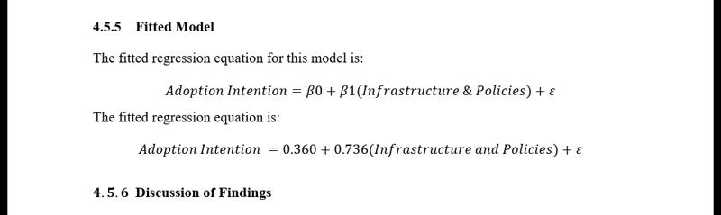

About Me
I’m Ebubechukwu "Ricks" Okolie, a Data Analyst and Statistics graduate from the University of Lagos (CGPA: 4.41/5.0, Top 7% of class)[cite: 1]. I specialize in statistical modeling, data cleaning, and visualization using Python, SQL, R, Excel, Power BI, and SPSS[cite: 1]. Alongside quantitative analysis, I bring extensive experience in Web3 ecosystem growth, tracking regional metrics, managing online communities, and speaking at physical community onboarding events[cite: 1].
Technical & Core Skills
- Python (Pandas, NumPy, Matplotlib)[cite: 1]
- R Programming & SPSS[cite: 1]
- SQL (MySQL, MS SQL, Oracle)[cite: 1]
- Power BI & Advanced Excel[cite: 1]
- Statistical Modeling & Regression Analysis[cite: 1]
- Time-Series Analysis & Data Cleaning[cite: 1]
- Community Growth & EMEA Operations[cite: 1]
- On-Chain & Market Data Analytics[cite: 1]
Experience & Leadership
Community Ambassador (EMEA) — Flagship
Nov 2025 – Mar 2026Tracked regional growth data and produced bi-weekly analytical metrics to evaluate community trajectories[cite: 1]. Delivered structured reporting insights directly to global leadership to refine regional strategies[cite: 1].
Community Onboarding Speaker & Organizer — Initia Project
June 2026Co-organized and spoke at a physical community event dedicated to onboarding new participants into the crypto ecosystem and Initia network[cite: 1].
Community Moderator — Sithswap (StarkNet Blockchain)
Mar 2022 – Jun 2024Monitored data integrity across community channels, synthesized qualitative user feedback trends, and delivered structured insights to the core dev team for platform updates[cite: 1].
Sports Secretary — Department of Statistics, UNILAG
Sep 2024 – Sep 2025Managed event logistics, volunteers, and resource allocation using structured planning to drive multi-stakeholder participation and improve overall event outcomes[cite: 1].
Featured Projects

Hire-Her Data Analysis Platform
ALX team project empowering women in job searches[cite: 1]. Handled data cleaning, transformation, and SQL queries on demographic datasets to build interactive Power BI dashboards[cite: 1].
View Project Details
Campus Transit Adoption Research
Academic research project analyzing student transport adoption using survey methodology, SPSS, multi-variable regression modeling, and statistical evaluation[cite: 1].
View Research Report
Rickbase Open-Source Repository
A public open-source project built with Next.js and TypeScript, highlighting frontend development architecture and software management workflows[cite: 1].
View on GitHub